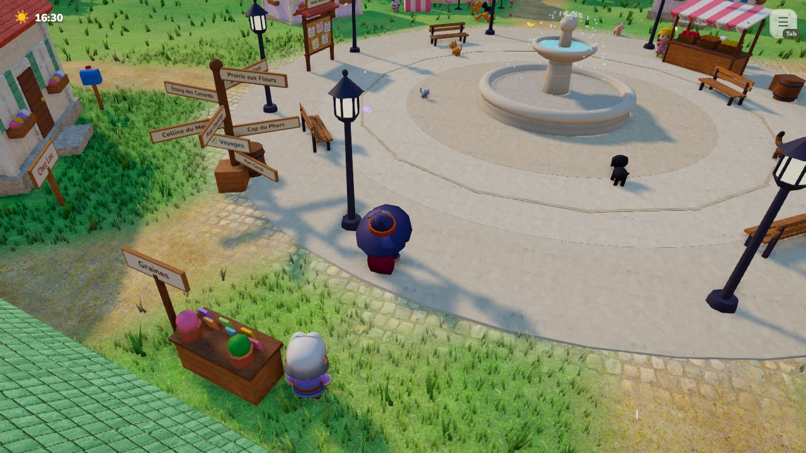
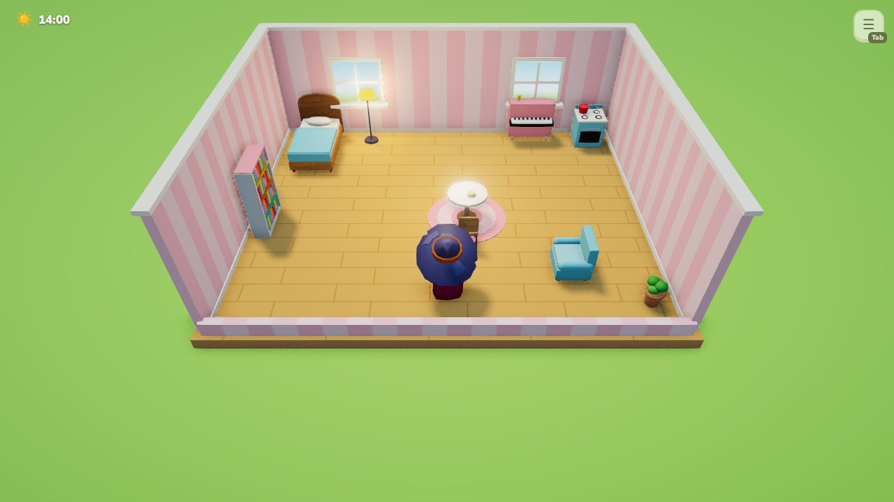
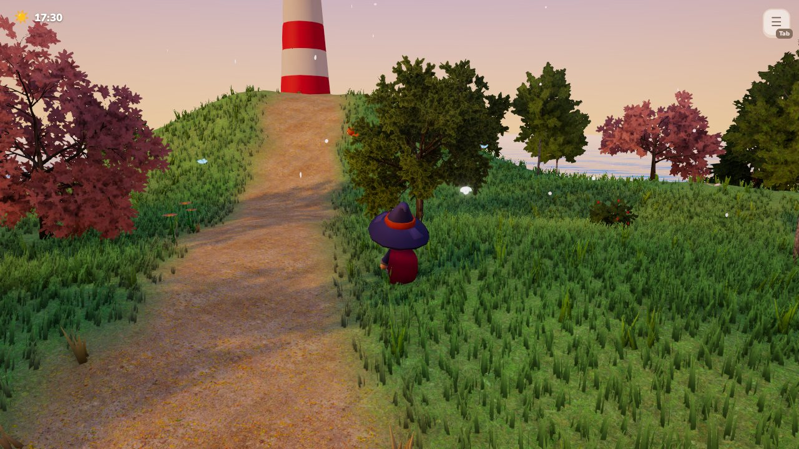
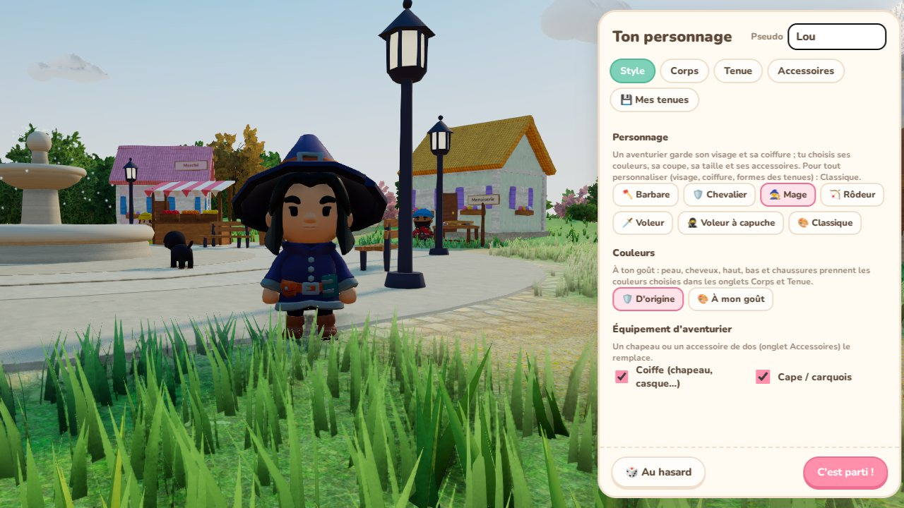

41 000
lignes de JavaScript
Un archipel à explorer, des animaux à apprivoiser, une maison à décorer et une histoire à vivre — entièrement développé en JavaScript, sans moteur de jeu.
On arrive à Doucebrise avec une lettre de Mamie Rose : le phare de l'île s'est éteint et le village s'est un peu perdu de vue. Au fil de 11 chapitres, on rallume le phare, on se lie d'amitié avec les habitants, on relie les trois îles de l'archipel et on découvre l'histoire de l'ancien gardien. Entre deux quêtes, on cultive son potager, on pêche, on cuisine, on adopte des animaux et on décore sa maison, au rythme des journées, des saisons et des fêtes du village.
Directement dans le navigateur (démo hébergée sur GitHub Pages) ou en application de bureau pour Windows, macOS et Linux, jouable hors ligne. Le jeu est en français.
41 000
lignes de JavaScript
~100
fichiers, sans moteur de jeu
11
chapitres + épilogue (49 quêtes)
16
habitants et 16 espèces d'animaux
150+
meubles pour décorer la maison
3
îles reliées par des ponts, 3 villages
116
vérifications dans le test de l'histoire
3
systèmes : Windows, macOS, Linux





Un archipel de 3 îles et 3 villages, reliés par des ponts. On s'y déplace à pied, à trottinette, à vélo, en scooter, en voiturette, en bateau ou en montgolfière.
11 chapitres et un épilogue (49 quêtes), avec des scènes mises en scène : plans cinéma, cérémonies de nuit, demande en mariage au pied du phare… On retrouve aussi, page par page, le carnet de l'ancien gardien grâce à des énigmes.
16 personnages avec métier, emploi du temps, goûts, dialogues, amitié et 58 quêtes personnelles.
16 espèces (chats, chiens, renards, pandas roux, loutres…) à apprivoiser, adopter, habiller et emmener avec soi.
Plus de 150 meubles, objets à poser sur les meubles, papiers peints, sols, façade et jardin, et une maison qu'on peut agrandir.
Potager, cueillette, pêche, cuisine, insectes, petits boulots, défis quotidiens, succès et titres.
Cycle jour et nuit, 4 saisons, météo, fêtes de saison et mini-jeux (course de luge, feux d'artifice, fête des neiges).
| Domaine | Choix | Pourquoi |
|---|---|---|
| Rendu 3D | Three.js (WebGL) | Ombres, occlusion ambiante, eau à reflets, herbe dense, sol à textures mélangées selon le terrain, post-traitement (bloom, étalonnage), deux styles au choix : réaliste ou cartoon |
| Langage | JavaScript (modules ES) | ≈ 41 000 lignes dans ≈ 100 fichiers, sans moteur de jeu ni framework d'interface : contrôle total et démarrage léger |
| Build | Vite | Rechargement instantané en développement, bundle optimisé pour le web |
| Application de bureau | Electron + electron-builder | Protocole interne app:// pour jouer hors ligne ; Windows (installateur + portable), macOS (universel Intel/Apple Silicon), Linux (.deb, AppImage, archive) |
| Génération procédurale | Code maison | Terrain de l'archipel, villages, maisons, animaux, meubles et arbres construits par le code (personnages et une partie de la végétation : packs 3D libres) |
| IA des animaux | Pathfinding A* | Grille de navigation recalculée seulement autour de ce qui change |
| Son | Web Audio API | Bruitages et ambiances synthétisés en direct (pas, vent, vagues, oiseaux…), adaptés au lieu, à l'heure et à la météo |
| Tests | Playwright (Chromium sans écran) | Test de fumée de 24 étapes + test qui joue toute l'histoire et toutes les quêtes (116 vérifications) |
| CI/CD | GitHub Actions + GitHub Pages | Tests à chaque envoi, build des apps des 3 systèmes jointes aux releases, publication de la démo jouable |
git push │ ▼ GitHub Actions ├── Tests Playwright (fumée 24 étapes + histoire complète) ├── Build Electron ──► Windows · macOS (universel) · Linux │ └── jointes à la release GitHub └── Build Vite ──────► GitHub Pages (démo jouable en ligne) Application de bureau ──► vérifie les nouvelles versions au démarrage
Le vrai cœur du projet — les problèmes concrets résolus, pas juste la liste de fonctionnalités.
Modèles 3D : KayKit et Kenney (CC0) · Textures : Poly Haven (CC0) · Rameaux d'arbres : projet EZ-Tree (MIT) · Police : Nunito (OFL). Le reste — terrain, villages, maisons, animaux, meubles, sons — est construit par le code.